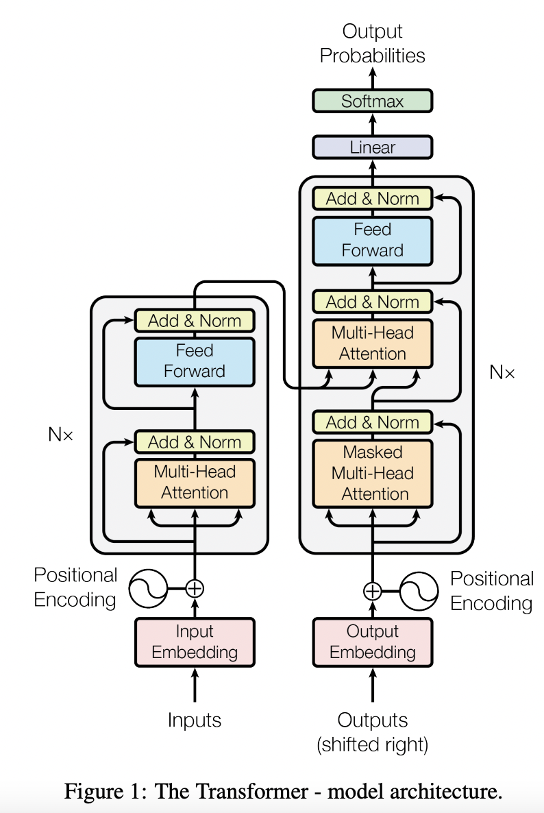
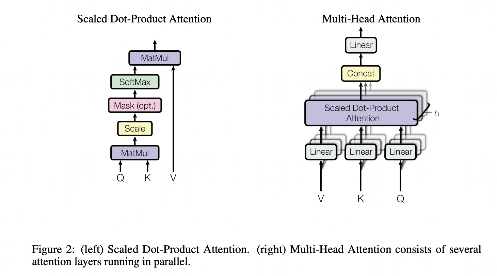
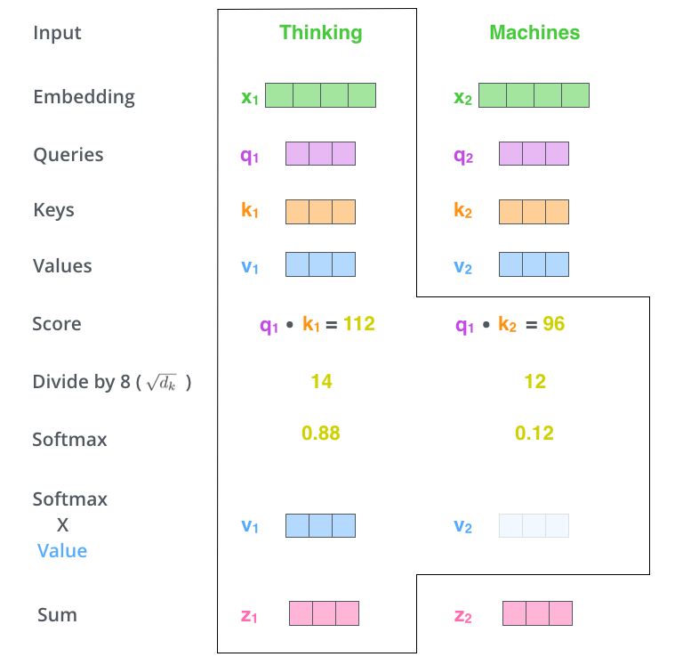
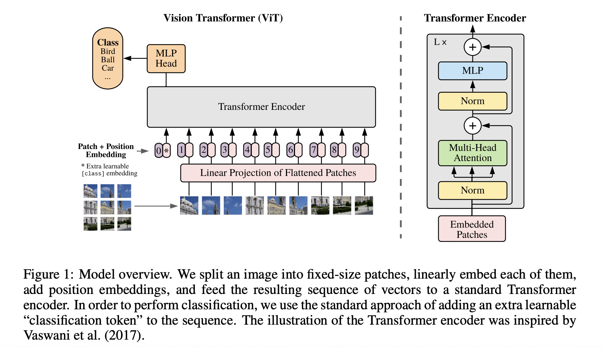
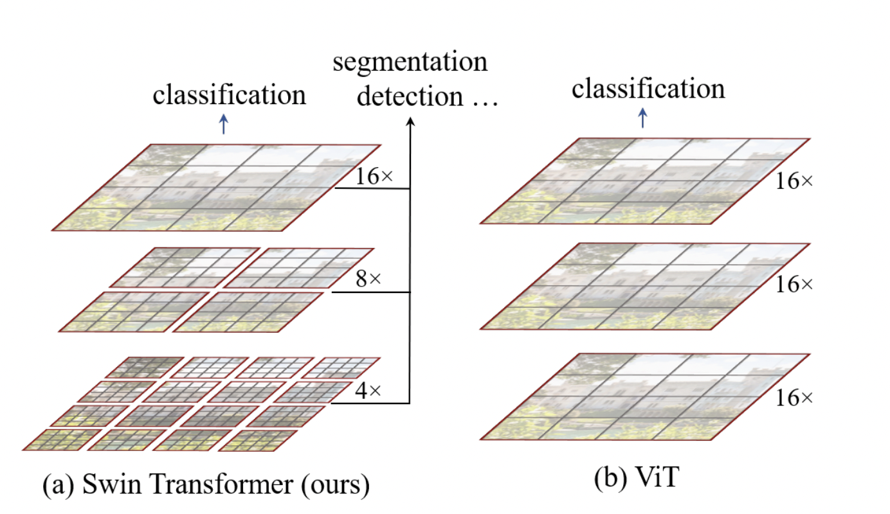
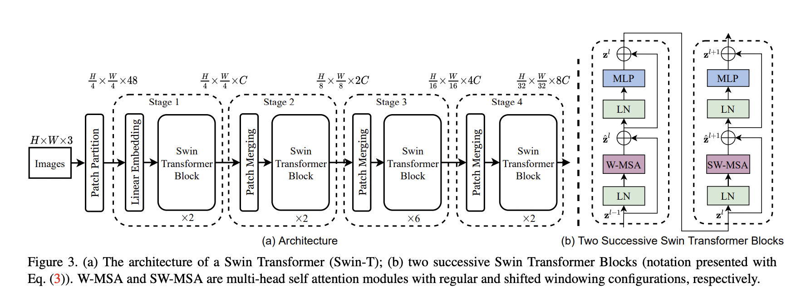
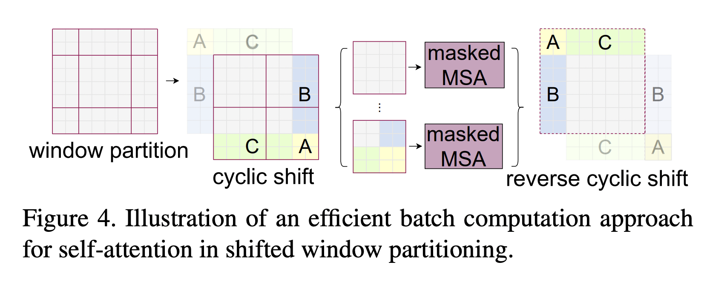

13. Transformer
Transformer 是一个典型的 Encoder-Decoder 模型，采用完全依赖于注意力机制的架构。


Encoder 和 Decoder 均由 6 个 Block 堆叠而成。
13.1. 输入
包括 Input Embedding 和 Positional Encoding（正弦/余弦编码）。
13.2. Encoder
Encoder 由 3 个子模块构成：
Multi-Head Self-Attention
Layer Normalization
Feed Forward Network
13.3. Decoder
Decoder 由 4 个子模块构成：
Multi-Head Self-Attention
Multi-Head Encoder-Dencoder Attention 交互模块
Layer Normalization
Feed Forward Network
Encoder 端可以并行计算，一次性将输入序列全部 Encoding 出来，但 Decoder 端不是一次性把所有 Token 预测出来的，而是像 seq2seq 一样一个接着一个预测出来的。
13.4. Self-Attention


在 Self-Attention 中，序列中的每个单词和该序列中其余单词进行 Attention 计算。Self-Attention 的特点在于无视 Token 之间的距离直接计算依赖关系，从而能够学习到序列的内部结构，实现起来也比较简单。引入 Self-Attention 后会更容易捕获句子中长距离的相互依赖的特征。
其中， \(Q=XW_Q,\ K=XW_K,\ V=XW_V \in \mathbb{R}^{n \times d}\) 。由于这 3 个矩阵都是由输入 \(X\) 得到，因此叫 Self-Attention。
使用 \(\boldsymbol{q}\) 和 \(\boldsymbol{k}\) 两组向量来计算权重（而不是一组），增加了权重的自由度，权重有可能是非对偶的（即 \(\boldsymbol{q}_i^{\top}\boldsymbol{k}_j \ne \boldsymbol{k}_i^{\top}\boldsymbol{q}_j\) ），增强了模型的表达能力。
假设两个 \(d\) 维向量的每个分量都是一个相互独立的服从标准正态分布的随机变量，那么他们的点乘方差就是 \(d\) ，对每一个分量除以 \(\sqrt{d}\) 可以让点乘的方差归一化成 1。
Multi-Head Attention 相当于 \(h\) 个不同的 Self-Attention 的集成。将模型分为多个头，形成多个子空间，可以让模型去关注不同方面的信息，最后再将各个方面的信息综合起来。类比 CNN 中同时使用多个卷积核的作用，多头的注意力有助于网络捕捉到更丰富的特征/信息。


Note
Q 决定：我要关注谁；
K 决定：我有多容易被关注；
V 决定：被关注后我贡献什么信息。
\(\color{darkgreen}{Code}\)
1import numpy as np
2
3
4def softmax_with_mask(scores, mask=None):
5 """
6 带 mask 的 softmax。
7
8 参数:
9 scores: 形状 (..., L, S)，注意力分数
10 mask: 形状可广播到 scores 的布尔数组，True 表示保留，False 表示屏蔽
11
12 返回:
13 attn: 形状同 scores，每行和为 1；如果某一行全被屏蔽，则该行全为 0
14 """
15 if mask is not None:
16 # 被屏蔽的位置设为 -inf，这样 exp 后为 0
17 scores = np.where(mask, scores, -np.inf)
18
19 # 数值稳定：减去每行最大值
20 max_scores = np.max(scores, axis=-1, keepdims=True)
21
22 # 如果某一行全部被 mask，max_scores 可能是 -inf，需要特殊处理
23 all_masked = np.isneginf(max_scores)
24 max_scores = np.where(all_masked, 0.0, max_scores)
25
26 exp_scores = np.exp(scores - max_scores)
27 sum_exp = np.sum(exp_scores, axis=-1, keepdims=True)
28
29 # 避免除零：全 masked 行 sum_exp 为 0，令其输出全 0
30 sum_exp = np.where(sum_exp == 0, 1.0, sum_exp)
31 attn = exp_scores / sum_exp
32 return attn
33
34
35class MultiHeadAttention:
36 def __init__(self, d_model, num_heads, seed=0):
37 """
38 参数:
39 d_model: 模型维度
40 num_heads: 注意力头数
41 seed: 随机种子
42 """
43 assert d_model % num_heads == 0, "d_model 必须能被 num_heads 整除"
44
45 self.d_model = d_model
46 self.num_heads = num_heads
47 self.head_dim = d_model // num_heads
48
49 rng = np.random.default_rng(seed)
50
51 # Xavier/Glorot 初始化
52 limit = np.sqrt(6.0 / (d_model + d_model))
53 self.W_q = rng.uniform(-limit, limit, (d_model, d_model))
54 self.W_k = rng.uniform(-limit, limit, (d_model, d_model))
55 self.W_v = rng.uniform(-limit, limit, (d_model, d_model))
56 self.W_o = rng.uniform(-limit, limit, (d_model, d_model))
57
58 self.b_q = np.zeros(d_model)
59 self.b_k = np.zeros(d_model)
60 self.b_v = np.zeros(d_model)
61 self.b_o = np.zeros(d_model)
62
63 def _split_heads(self, x):
64 """
65 将 (B, seq_len, d_model) 拆分为多头:
66 (B, seq_len, num_heads, head_dim) -> (B, num_heads, seq_len, head_dim)
67 """
68 batch, seq_len, _ = x.shape
69 x = x.reshape(batch, seq_len, self.num_heads, self.head_dim)
70 return x.transpose(0, 2, 1, 3)
71
72 def _combine_heads(self, x):
73 """
74 将多头合并回 (B, seq_len, d_model)
75 x: (B, num_heads, seq_len, head_dim)
76 """
77 batch, num_heads, seq_len, head_dim = x.shape
78 x = x.transpose(0, 2, 1, 3) # (B, seq_len, num_heads, head_dim)
79 return x.reshape(batch, seq_len, self.d_model)
80
81 def forward(self, query, key, value, attn_mask=None, key_padding_mask=None):
82 """
83 多头注意力前向计算。
84
85 参数:
86 query: (B, q_len, d_model)
87 key: (B, k_len, d_model)
88 value: (B, k_len, d_model)
89 attn_mask:
90 - 形状 (q_len, k_len) 或 (B, q_len, k_len)
91 - 布尔数组，True 表示保留，False 表示屏蔽
92 - 常用于 causal mask（自回归时屏蔽未来位置）
93 key_padding_mask:
94 - 形状 (B, k_len)
95 - 布尔数组，True 表示保留，False 表示屏蔽（即 padding 位置为 False）
96 - 用于屏蔽 key/value 中的 padding token
97
98 返回:
99 output: (B, q_len, d_model)
100 attn_weights: (B, num_heads, q_len, k_len)
101 """
102 # 1. 线性投影得到 Q, K, V
103 q = query @ self.W_q + self.b_q # (B, q_len, d_model)
104 k = key @ self.W_k + self.b_k # (B, k_len, d_model)
105 v = value @ self.W_v + self.b_v # (B, k_len, d_model)
106
107 # 2. 分头
108 q = self._split_heads(q) # (B, H, q_len, head_dim)
109 k = self._split_heads(k) # (B, H, k_len, head_dim)
110 v = self._split_heads(v) # (B, H, k_len, head_dim)
111
112 # 3. 缩放点积注意力分数
113 # scores: (B, H, q_len, k_len)
114 scores = q @ k.transpose(0, 1, 3, 2) / np.sqrt(self.head_dim)
115
116 # 4. 构建并合并 mask
117 mask = None
118
119 if attn_mask is not None:
120 if attn_mask.ndim == 2:
121 # (q_len, k_len) -> (1, 1, q_len, k_len)
122 mask = attn_mask[None, None, :, :]
123 elif attn_mask.ndim == 3:
124 # (B, q_len, k_len) -> (B, 1, q_len, k_len)
125 mask = attn_mask[:, None, :, :]
126 else:
127 raise ValueError("attn_mask 的维度必须是 2 或 3")
128
129 if key_padding_mask is not None:
130 # (B, k_len) -> (B, 1, 1, k_len)
131 kpm = key_padding_mask[:, None, None, :]
132 if mask is None:
133 mask = kpm
134 else:
135 # 广播合并：两个 mask 都为 True 的位置才保留
136 mask = mask & kpm
137
138 # 5. 带 mask 的 softmax，得到注意力权重
139 attn_weights = softmax_with_mask(scores, mask) # (B, H, q_len, k_len)
140
141 # 6. 加权求和
142 attn_output = attn_weights @ v # (B, H, q_len, head_dim)
143
144 # 7. 合并多头
145 attn_output = self._combine_heads(attn_output) # (B, q_len, d_model)
146
147 # 8. 输出投影
148 output = attn_output @ self.W_o + self.b_o # (B, q_len, d_model)
149
150 return output, attn_weights
151
152
153# ================== 使用示例 ==================
154if __name__ == "__main__":
155 B, q_len, k_len = 2, 5, 6
156 d_model, num_heads = 16, 4
157
158 # 随机输入
159 query = np.random.randn(B, q_len, d_model)
160 key = np.random.randn(B, k_len, d_model)
161 value = np.random.randn(B, k_len, d_model)
162
163 mha = MultiHeadAttention(d_model, num_heads)
164
165 # 构造 causal mask: 下三角为 True（保留），上三角为 False（屏蔽）
166 # 这里 q_len=5, k_len=6，np.tril 会保留每行前 i+1 个位置
167 causal_mask = np.tril(np.ones((q_len, k_len), dtype=bool))
168
169 # 构造 key padding mask: (B, k_len)，True 保留，False 屏蔽
170 key_padding_mask = np.ones((B, k_len), dtype=bool)
171 key_padding_mask[0, -2:] = False # 第 0 个样本最后两个 key 是 padding
172
173 output, attn = mha.forward(
174 query, key, value,
175 attn_mask=causal_mask,
176 key_padding_mask=key_padding_mask
177 )
178
179 print("output shape:", output.shape) # (2, 5, 16)
180 print("attn shape:", attn.shape) # (2, 4, 5, 6)
计算复杂度
假设序列长度为 \(n\) ， \(Q,K,V \in \mathbb{R}^{n \times d}\) 。 Self-Attention 三个步骤的复杂度：
相似度计算： \(\mathcal{O}(n^2 d)\)
Softmax： \(\mathcal{O}(n^2)\)
加权平均： \(\mathcal{O}(n^2 d)\)
因此总的时间复杂度是 \(\mathcal{O}(n^2 d)\) 。
Multi-Head Attention 的实现不是循环地计算每个头，而是通过 Transposes and Reshapes，把一个大矩阵相乘变成了多个小矩阵的相乘。 Multi-Head Attention时间复杂度也是 \(\mathcal{O}(n^2 d)\) （每个头的对应的 \(\boldsymbol{q},\boldsymbol{k},\boldsymbol{v}\) 向量维度为 \(\frac{d}{h}\) ）。
Note
如果考虑从 \(X\) 到 \(Q,K,V\) 的线性映射，时间复杂度还需要加上 \(\mathcal{O}(n d^2)\) 。
13.5. Layer Normalization
Layer Normalization 的作用是对神经网络中隐藏层输出的 Embedding 施加尺度约束，将其归一为标准正态分布，以起到加快训练速度、加速收敛的作用。
13.6. Feed Forward Network
两层全连接结构：
\(W_1\) 将输入的维度扩展为 \(4d\) ，\(W_2\) 重新降回原来的维度 \(d\) 。
它的核心作用可以概括为：
引入非线性，增强表达能力。自注意力主要做加权聚合，本质偏线性；FFN 通过激活函数引入非线性，使模型能拟合更复杂的函数。没有 FFN，Transformer 的表达能力会明显受限。
进行特征维度上的“通道混合”。自注意力负责 token 之间的信息混合，即 “token mixing”；FFN 负责同一个 token 内部不同特征维度之间的混合，即 “channel mixing”。两者互补。
升维—激活—降维，做深度特征变换。原版 Transformer 中，FFN 通常先把维度扩展到 4 倍，经过激活函数后再投影回原维度。这个过程让模型在高维空间中进行更丰富的特征组合和变换。
提供大量参数容量，存储知识与模式。FFN 往往占据 Transformer 参数量的很大一部分。有研究把它看作一种 key-value memory，认为它存储了大量事实知识、语言模式和统计规律。
逐位置独立，计算高效且可并行。FFN 对每个 token 独立处理，不改变序列长度，也不建模 token 间关系，因此可以高度并行。位置信息和上下文关系主要由注意力机制处理。
13.7. CV 领域的应用
ViT


ViT将输入图片分为多个 Patch，再将每个 Patch 投影为固定长度的向量（Patch Embedding）送入 Transformer，后续 Encoder 的操作和原始 Transformer 中完全相同。 对于图像分类任务，在输入序列中加入一个特殊的 Token，它对应的输出即为最后的类别预测。
当训练数据集不够大的时候，ViT 的表现通常比同等大小的 ResNet 要差一些，因为 Transformer 和 CNN 相比缺少归纳偏置（Inductive Bias），即一种先验知识/提前做好的假设。 CNN 具有两种归纳偏置：
局部性（Locality/Two-dimensional Neighborhood Structure）：图片上相邻的区域具有相似的特征；
平移不变性（Translation Invariance）：当目标出现在图像的不同位置时，也能得出相同的分类结果（主要依靠 Global Pooling）。
当 CNN 具有以上两种归纳偏置，就有了很多先验信息，需要相对少的数据就可以学习一个比较好的模型。
Patch Embedding
假设输入图片大小为 \(224 \times 224 \times 3\) ，将图片分为固定大小的 Patch，每个 Patch大小为 \(16 \times 16 \times 3\) ，则每张图像会生成 \(\frac{224 \times 224}{16 \times 16} = 196\) 个 Patch，即输入序列长度为 \(196\) 。 每个 Patch 维度 \(16 \times 16 \times 3 = 768\) ，线性投射层的维度为 \(768 \times 768\) ，因此输入通过线性投射层之后的维度依然为 \(196 \times 768\) ，即一共有 \(196\) 个 Token，每个 Token Embedding 的维度是 \(768\) 。 这里还需要加上一个特殊字符 cls，因此最终的维度是 \(197 \times 768\) 。
经过 Transformer Encoder 的维度仍然是 \(197 \times 768\) ，取特殊字符 cls 对应的输出第 0 个 \(768\) 维的向量作为 Encoder 的最终输出 ，代表最终的 Image Presentation（另一种做法是不加 cls 字符，对所有的 Token 的输出向量取平均），再接 MLP 进行分类。
Positional Encoding
有 1-D 位置编码和 2-D 位置编码。 位置编码可以理解为一张表，表一共有 \(N\) 行，和输入序列长度相同；每一行代表一个向量，向量的维度和 Patch Embedding 的维度相同（ \(768\) ）。
位置向量和 Patch Embedding 相加（保证维度不变），作为 Transformer Encoder 的输入。
实验结果表明，不管使用哪种位置编码方式，模型的精度都很接近，甚至不使用位置编码，模型的性能损失也没有特别大。 原因可能是 ViT 是作用在 Image Patch 上的，而不是 Pixel，对网络来说这些 Patch 之间的相对位置信息很容易理解。
当输入图片分辨率发生变化，输入序列的长度也发生变化，虽然 ViT 可以处理任意长度的序列，但是预训练好的位置编码无法再使用（例如原来是 \(3 \times 3 = 9\) 个 Patch， 每个 Patch 的位置编码都是有明确意义的，如果 Patch 数量变多，位置信息就会发生变化）。 一种做法是使用插值算法，扩大位置编码表。但是如果序列长度变化过大，插值操作会损失模型性能，这是 ViT 在微调时的一种局限性。
CNN + Transformer 混合模型
既然 CNN 具有归纳偏置的特性，Transformer 又具有很强全局归纳建模能力，使用 CNN + Transformer 的混合模型是不是可以得到更好的效果呢？
\(224 \times 224 \times 3\) 的图像经过卷积层得到 \(14 \times 14 \times 768\) 的 Feature Map，拉成一个 \(196 \times 768\) 的二维 Tensor，后续操作和 ViT 相同。
Note
Patch Size 增大一倍，Patch 数量（即序列长度）会减少到原来的四分之一，在维持 Hidden Layer 维度不变的情况下，计算量将会大大减少。
Swin Transformer


Swin Transformer 主要有两个创新：
- 使用了层级式多分辨率的 Patch（Hierarchical Feature Maps）。
先是进行 4 倍下采样，然后是 8 倍，接着是 16 倍，一直下采样直到达到预期的下采样倍数。相比之下，ViT 只使用了 16 倍的下采样。 这样利于支持更多的图像下游任务，而不仅仅是分类。
- 窗口式的 Self-Attention（W-MSA，SW-MSA）。
将 Feature Map 划分成一个个的小窗口，将这些小窗口送入到 Swin Transformer Block 中，减少了计算量。
模型框架


Note
Transformer 的输入输出都是二维的矩阵，比如图中的 \(\frac{H}{4} \times \frac{W}{4} \times C\) 其实是 \(\frac{HW}{16}\times C\) 。
Patch Partition + Linear Embedding
同 ViT。
Patch Merging
实现 Feature Map 分辨率减半，通道数翻倍。
Swin Transformer Block
W-MSA（Windows Multi-Head Attention）和 SW-MSA（Shifted Windows Multi-Head Attention）代替了原生版本的 Multi-Head Attention。
W-MSA 将 Feature Map 分成一个个 Windows，然后对每个 Windows 执行 Multi-Head Attention 操作，减少了计算量。
W-MSA 的各个 Windows 之间相互独立、缺乏交互，SW-MSA 会重新划分窗口，使得之前各个 Windows 的数据可以进一步融合、传递（需要 Mask 掉原本不相邻的数据块）。


Relative Position Bias
相对位置偏置 \(B\) 融合进 Attention 的公式中：
Note
ViT 和 Swin Transformer 的实现：
13.8. 参考资料
Transformer
Transformer
The Illustrated Transformer
举个例子讲下transformer的输入输出细节及其他
ViT（Vision Transformer）解析
Swin Transformer原理详解篇
Hugging Face Transformers